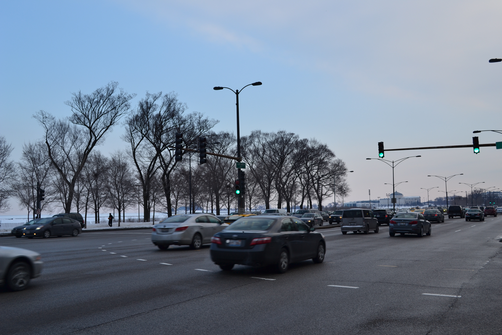
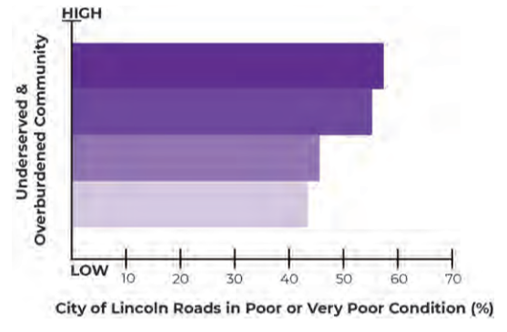
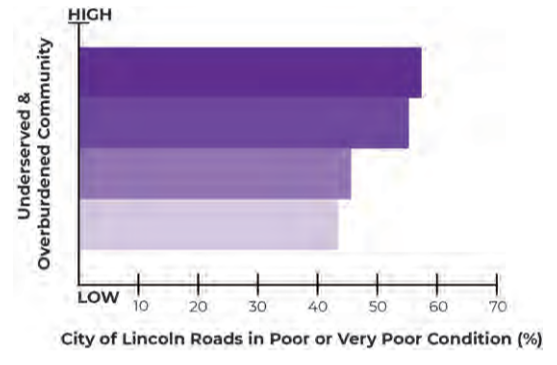
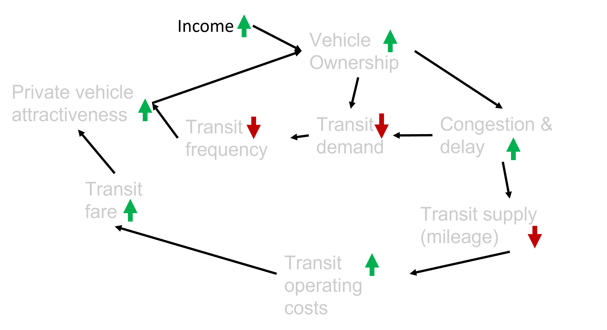
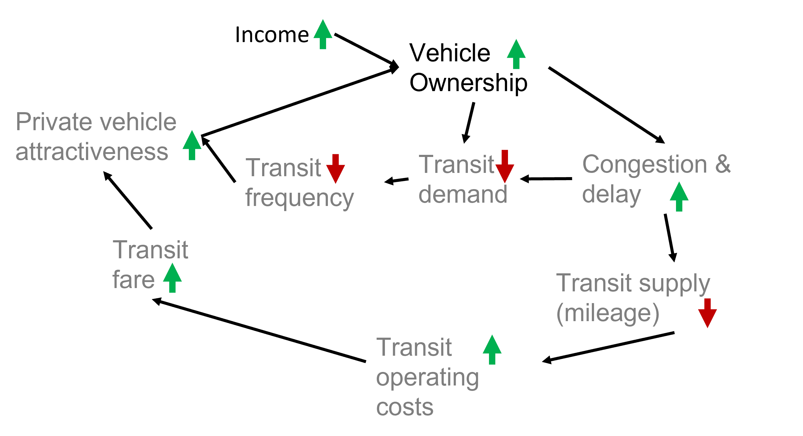
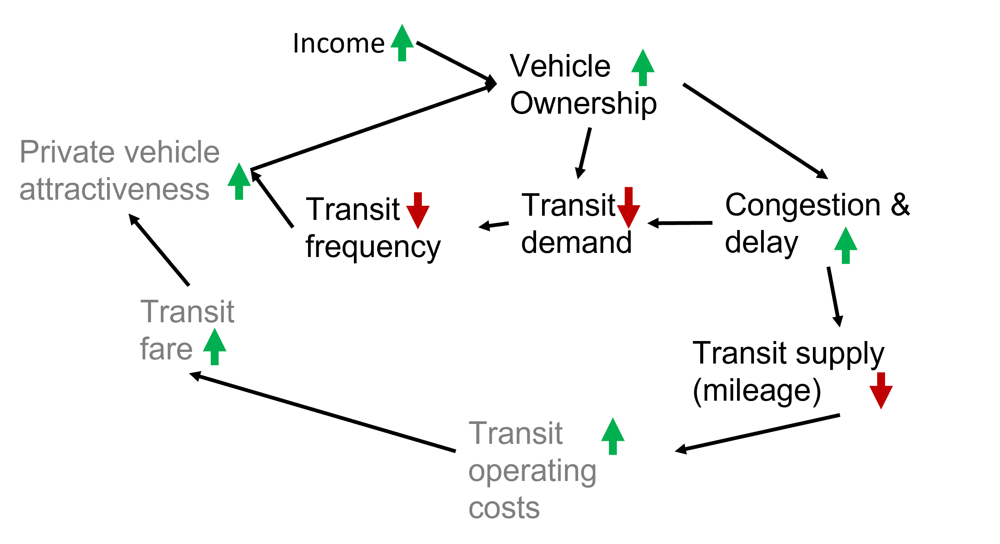
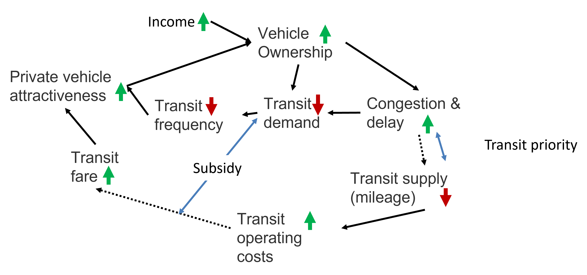
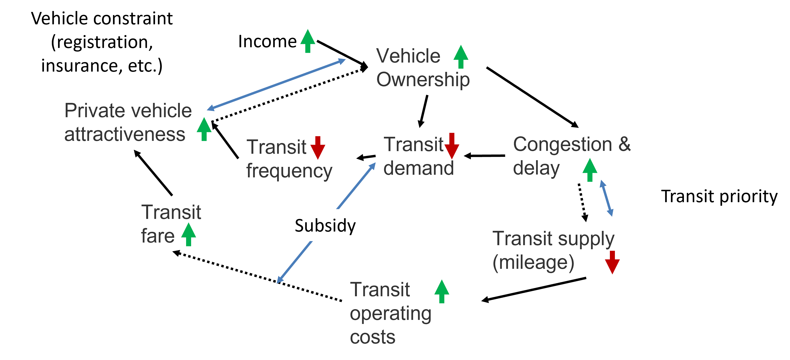

Lecture 1 - Introduction
CIVE 461/861: Urban Transportation Planning
Congestion


Traffic Safety


Economics


Equity & Diversity
 

Transportation & Land Use


Global Trends & Urban Regions
- Globalization
- Cheap & high capacity telecommunications - reduced need to travel?
- Good transportation infrastructure enhances economic competitiveness
- Larger role of private sector in transport supply & operations


Roads & Their Many Roles
| Economic | Social | Cultural |
|---|---|---|
 |
 |
 |
| Recreational | Mobility | |
 |
 |
Transportation System Concepts
Mobility: The ability to travel from one location to another in a reasonable time for acceptable cost.
Accessibility: The ability to access an economic or social activity in a reasonable time for acceptable cost.


Transportation System Concepts
Mobility: The ability to travel from one location to another in a reasonable time for acceptable cost.
Accessibility: The ability to access an economic or social activity in a reasonable time for acceptable cost.
Transportation System Concepts

Street

Stroad -> Street


Car-Public Transit Feedback Cycle**






Breaking The Cycle



Transport Costs & Subsidies (Left-Of-Center View)
- In addition to gas tax (federal tax 18 cents per gallon since 1980s!):
- $597 per U.S. household per year in general tax revenue dedicated to road construction & repair
- $199 to $675 per household per year in additional tax subsidies for driving - e.g., sales tax exemption for gasoline purchases in many states & federal income tax exclusion for commuter parking benefits
- $216 per household per year in government expenditures made necessary by vehicle crashes, plus additional, uncompensated damages to victims and property
- $93 to $360 per household per year in costs related to air pollution-induced health damage

Transport Costs & Subsidies (Right-Of-Center View)

- Does not include parking subsidy
- Does not include crash costs
- Transit subsidy per mile estimated at 76% by APTA – 50% equity-justified
- Note farebox recovery ratios (user cost / total cost) can vary:
- Hong Kong MTR = 172%
- Amsterdam = 88%
- Toronto TTC = 66%
- New York MTA = 24%
- Chicago CTA = 16%
Models & Their Roles
- We will devote large portion of class towards developing models
- Model is simply representation of part of real-world system of interest
- Model may be physical or abstract
- Physical models used in architecture & fluid mechanics
- Abstract models are mental models used in daily interactions with world - formal & abstract (typically analytical) representations of theory about system of interest/how it works
- Mental models important & enhance discussion, training, & experience but difficult to communicate


Models & Their Roles
- Computers can make error-free calculations BUT humans are error- and bias-prone


Workforce Trends
- Multi-modal transportation planning
- Complete Streets – Nebraska DOT focused on it for small communities
- Larger datasets = Excel -> R & Python
- Non-infrastructure solutions – ridesharing, autonomous vehicles, pricing, and land use reform